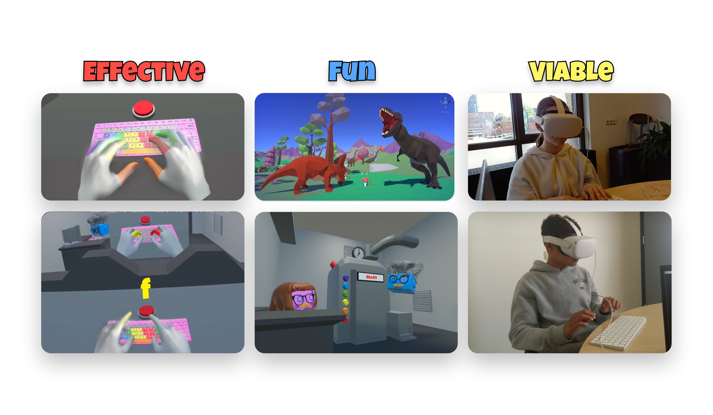
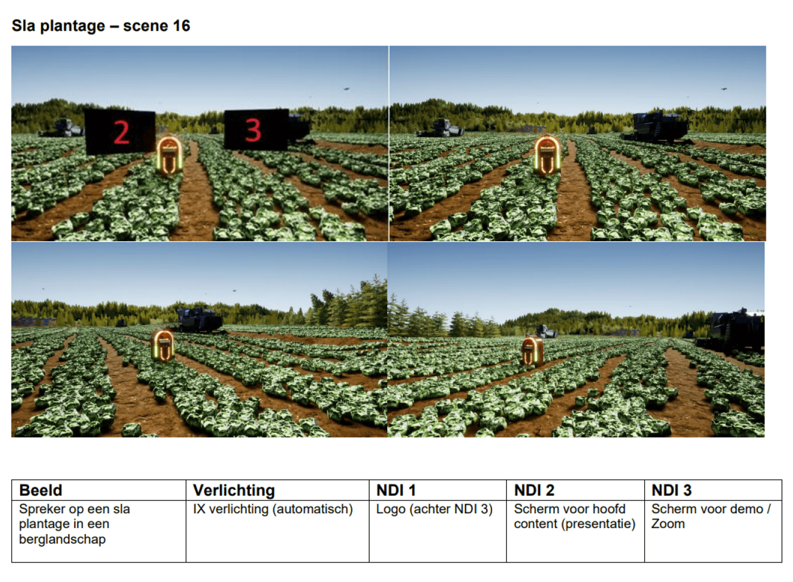
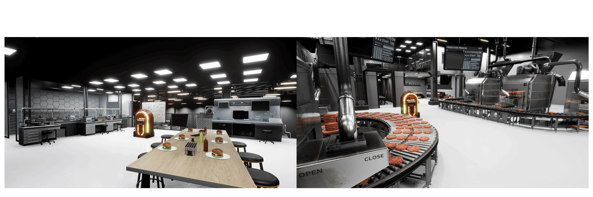
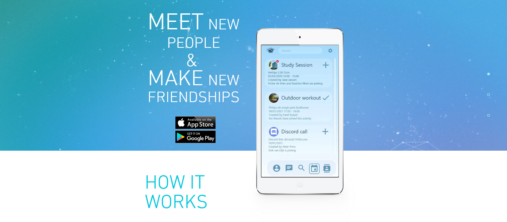
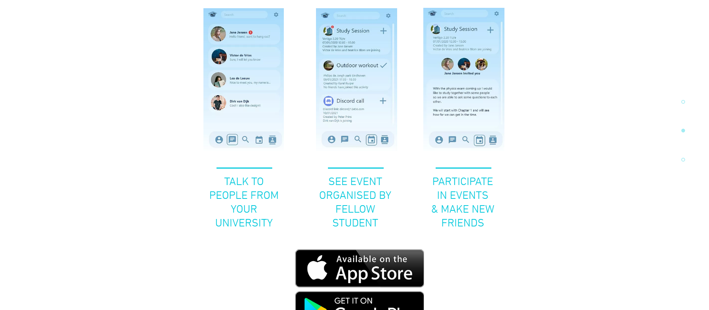
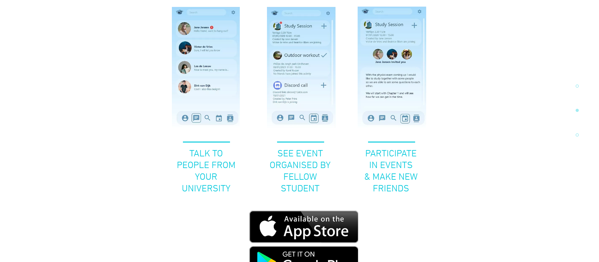
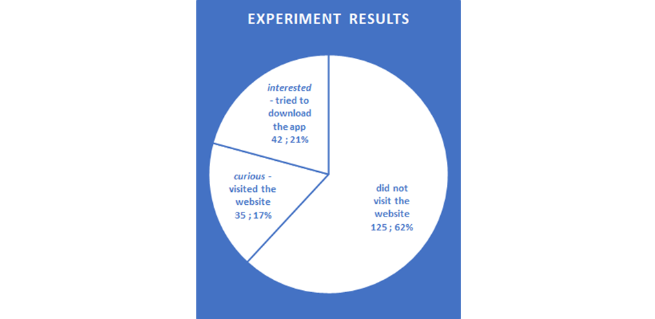

Nice to meet you,
my name is
Nick van Geenen
XR Designer


My passion for technological innovation is rooted in the characteristic that I am always challenging myself to learn. I like a hands-on approach to learning a new skill, or to a design project. Programming and 3D realization are things that suit me well, and together with my passion for innovation, have led me to develop a healthy obsession for Extended Reality (XR*) design.
During my BSc I have developed myself in different complementary expertise areas to become a well-rounded designer. I want to change the world by realizing great products, but besides technological skills, this requires a good understanding of the design process, business, research and user-centered design.
I completed the ‘Technology Entrepreneurship’ trajectory, because I think combining entrepreneurship with innovative product design is the best combination to foster a positive impact on the world. With my skillset I want to achieve this through my own ventures, or by being entrepreneurial within a company.
I get a lot of motivation from collaborating in a team that works together to build a product. I like to collaborate with people from different expertise’s, because of how everyone brings their own knowledge and skills to the table. Being a designer and entrepreneur means taking leadership, so besides typical design tasks, my role would be to shape the product vision and use this to push the team forward.
Vision
With a future where technological advancements continue to evolve at an unprecedented rate, we will have to constantly rethink the connection between humanity and technology to let the two grow together. Just like the smartphone did in 2007, I think XR technology will cause a turning point in how users interact with technology, and in society as a whole.
Being learn-eager myself, I see immense potential in applying XR for education, allowing intelligent technology to help create more intelligent humans. I imagine a future where personalized, immersive, and interactive experiences will play a key role in an individual’s education. Despite this potential, the present-day raises challenges for designers and leaders to responsibly design the impact on the user and society.
The 'Metaverse' for example is going to be detrimental if the priorities of the users are not aligned with the priorities of the people creating it. It is my role as a designer to help create this with responsibility to the user, especially the most vulnerable. Because this challenge is so complex, it motivates me to keep developing myself to be able to do the best I can.
To design for the user on products that are evolving far past simple UI’s and simple functionalities, it takes an ever-evolving skillset to understand what the users’ needs actually are, and I think I have the potential to do so.
*Extended Reality (XR)
Extended reality (XR) is an umbrella term for any technology that alters reality by adding digital elements to the physical or real-world environment to any extent and includes, but is not limited to, augmented reality (AR), mixed reality (MR) and virtual reality (VR).
Technological innovation lies at the core of my identity as a designer. Over the past years, I have established a foundation in many technological disciplines like 3D modelling, animation, rendering, creative coding, software engineering, and game-, app-, and web- development. I carry most of these skills with me as I put my focus on XR technology. Building this skillset has provided me with the confidence that I would be able to learn most technological skills necessary for creating educational XR products, and use iterative prototyping as an effective way to improve my designs.
User & Society ●●●●○
The only way that my designs will make a positive impact on the world, is when align with the needs of the user. Many skills are required to understand what these needs are and implement them in the right way. Especially when designing for a vulnerable target user, I put the user at the core of the project through user-centered design, conducting user research, and empathizing with the user. I am constantly learning to better understand different perspectives and understand the changing society. With a solid identity and vision, I can now dive deep into understanding the needs of the different stakeholders in educational XR design.
To create products that are both valuable and sustainable, a good understanding of the business environment is essential. In my toolbox T&R and U&S stand front and center in the products that I create, and B&E serves as a foundational skill to design innovative products that could bring real change to the world. I will continue to learn how the world of business and design really work by collaborating with external parners and companies during my MSc.
I like to address the opportunities-, and the ethical questions that advanced technologies raise. I find the issues around data intriguing because they play such a significant role in the future of society. Because of this, my BSc involved multiple data-related courses, including software development for engineers, and an IoT research project. The skills collected from these courses will help me in M1 to conduct research and leverage data in my design processes.
I can take leadership in the design process and host exploration-, and ideation sessions. More importantly, I can facilitate convergent thinking sessions that help the team to come to great solutions out of a pool of ideas. I have learned to include aesthetics in my products, both as an engineer and as an artist. During the first few projects of my BSc I left this to others, so I could focus on the technical aspects of the product. Now that I am diving deep into XR design, I have found my way of including aesthetics in the form of digital 3D environments, characters, and interactions.
The product is developed further as a start-up, but there were clear outcomes to my Final Bachelor Project. I scheduled iteration 2 to be completed by the time of the final deadlines. This includes the 12-minute demo game, and the business deliverables necessary to continue the project as a start-up. 
At SAP, my main activity has been creating 3D environments that are used in an 'XR studio' to place a presenter or event host in a virtual environment (virtual production). Together with the team I realised many videos and live events for the company and its customers. Furthermore, I was entrusted to improve the usability- and deployability of the XR studio. The result of this process was a new XR presentation that demonstrates the SAP Strategy and its software products.

The deliverable is an Unreal Engine project file with 8 unique scenes. Scene switches, animations, and the virtual screens can be controlled by the studio team through a control panel. This allows sales and pre-sales to present the SAP strategy and products in a more engaging way.
Besides the Unreal Engine project file, I created an instruction manual with guidelines for both the studio team and the presenter. This ensures that the story is structured in a coherent way and the technology is used properly.  

Together with 3 fellow students we set out to design a novel IoT device for healthcare. Through a process of many iterations a prototype was created. HEXO strikes a balance between being lightweight, breathable, strong, and safe. Not only does it protect the user, but it also measures the impact of a fall and identifies the location of the impact.
Party Cube is designed to bring friends together in times of COVID. The game was creatd in a team with 2 other designers and 2 developers.
Together with an interdisciplinary team ranging from computer science- to business students, I set out to create a Minimum Viable Product that was easy to conceptualise and test. FriendsFirst is a social media app that enables first year university students to meet each other and plan activities together.
The product is created with the LEAN strategy to quickly test the concept with the target user. I created designed a mock-up app in Adobe Xd which was presented on a mock-up website with a call to action to download the app in the app store. The user behaviour was digitally tracked and used to conduct a market study.
 

The outcome of the project was a successful market study that suggests the potential of the product. 21% of target users tried to download the app, and the feedback from participants was generally positive.
The past 3 years at the TU/e have been an amazing journey that taught me a lot about myself both as a person and as a designer. As a conclusion to my BSc I would like to summarize this journey up to my FBP to reflect on myself and inspire others:
I have found my passion by closely observing the products around me and being curious to understand the bigger societal- and historical context of the world. I started the bachelor program with an interest in just about everything and gradually narrowed this down: From everything technology related, to software, to XR (extended reality).
Through the diverse self-directed projects and learning activities I was able to explore my interest and pursue the things that fit me the best.
The activity that has made the most impact on me was my internship at SAP. With this internship I worked together in a real company, applying the expertise areas in the real world and finding out about my weaknesses in a hard but effective way. Most importantly, I learned what it takes to create real impact with a project, and this is what I carried with me to my FBP.
The Final Bachelor Project is the result of my BSc development and gave me the change to have a project that would capture my identity and vision in one deliverable. I set out to create a VR game for children, knowing that this would allow me to demonstrate and further develop my skills in 3D realization, user research, and entrepreneurship and contribute to the vision of meaningful educational experiences in XR.
Besides development in these 3 core expertise areas, this also allowed for plenty of room to develop my creative skills in the form of creating a storyline, characters, scripts and environments. Finally, collecting game data is also included to some extent, but will be the first future point of improvement.
Constantly wanting to better myself to work towards my vision has been the motivation to stay disciplined throughout the entire process. After being zoned in at the final bachelor project, first priority is to take a step back and see what new opportunities the future can hold.
I am convinced that working at a company I love would result in the best learning experience. Finding this company and job position helps me to work towards this position as a goal.
While searching for this company I start my MSc the following year. I am planning to use M2.1 to prepare for my Final Master Project at this particular company. I am already proud of my FBP result, but with this approach, I will be able to create something at least twice as great for my FMP.
To develop such a product, I seek to develop myself in the expertise area of User and Society and learn more about psychology, sociology, and ethics in the context of thoughtful XR design. M1 will allow me to temporarily shift focus from creating products to doing research, and build a thorough understanding of the area I am most interested in: XR educational game design.
Besides my MSc I will continue to develop the VR typing course as a startup. My foundation in all 5 expertise areas set me up to be a well-rounded designer, capable of launching my own product.